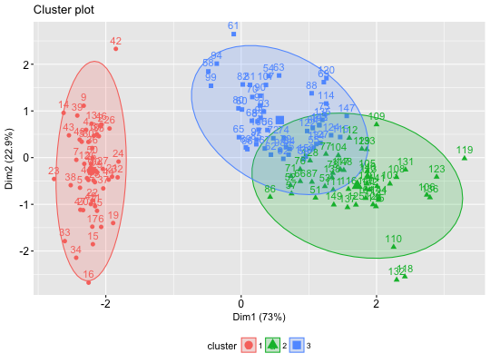
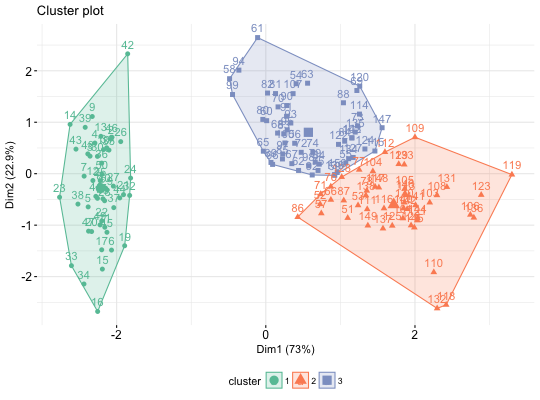

Provides ggplot2-based elegant visualization of partitioning methods including kmeans [stats package]; pam, clara and fanny [cluster package]; dbscan [fpc package]; Mclust [mclust package]; HCPC [FactoMineR]; hkmeans [factoextra]. Observations are represented by points in the plot, using principal components if ncol(data) > 2. An ellipse is drawn around each cluster.
fviz_cluster(object, data = NULL, choose.vars = NULL, stand = TRUE, geom = c("point", "text"), repel = FALSE, show.clust.cent = TRUE, ellipse = TRUE, ellipse.type = "convex", ellipse.level = 0.95, ellipse.alpha = 0.2, shape = NULL, pointsize = 1.5, labelsize = 12, main = "Cluster plot", xlab = NULL, ylab = NULL, outlier.color = "black", outlier.shape = 19, ggtheme = theme_grey(), ...)
stat_ellipse including one of c("t", "norm",
"euclid").ggplot2::stat_ellipse 's level.
Ignored in 'convex'. Default value is 0.95.ggscatter and ggpar.return a ggpplot.
fviz_silhouette, hcut,
hkmeans, eclust, fviz_dend
set.seed(123) # Data preparation # +++++++++++++++ data("iris") head(iris)#> Sepal.Length Sepal.Width Petal.Length Petal.Width Species #> 1 5.1 3.5 1.4 0.2 setosa #> 2 4.9 3.0 1.4 0.2 setosa #> 3 4.7 3.2 1.3 0.2 setosa #> 4 4.6 3.1 1.5 0.2 setosa #> 5 5.0 3.6 1.4 0.2 setosa #> 6 5.4 3.9 1.7 0.4 setosa# Remove species column (5) and scale the data iris.scaled <- scale(iris[, -5]) # K-means clustering # +++++++++++++++++++++ km.res <- kmeans(iris.scaled, 3, nstart = 10) # Visualize kmeans clustering # use repel = TRUE to avoid overplotting fviz_cluster(km.res, iris[, -5], ellipse.type = "norm")# Change the color palette and theme fviz_cluster(km.res, iris[, -5], palette = "Set2", ggtheme = theme_minimal())## Not run: ------------------------------------ # # Show points only # fviz_cluster(km.res, iris[, -5], geom = "point") # # Show text only # fviz_cluster(km.res, iris[, -5], geom = "text") # # # PAM clustering # # ++++++++++++++++++++ # require(cluster) # pam.res <- pam(iris.scaled, 3) # # Visualize pam clustering # fviz_cluster(pam.res, geom = "point", ellipse.type = "norm") # # # Hierarchical clustering # # ++++++++++++++++++++++++ # # Use hcut() which compute hclust and cut the tree # hc.cut <- hcut(iris.scaled, k = 3, hc_method = "complete") # # Visualize dendrogram # fviz_dend(hc.cut, show_labels = FALSE, rect = TRUE) # # Visualize cluster # fviz_cluster(hc.cut, ellipse.type = "convex") # ## ---------------------------------------------